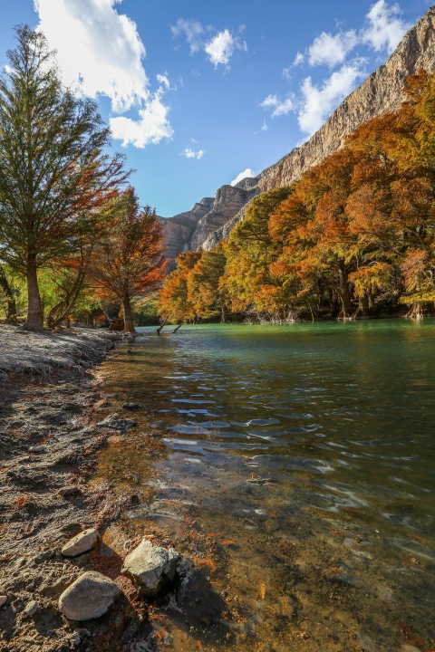

¡Datos Curiosos!
- Los Irritilas practicaban la pesca como una de sus actividades principales, así como la caza, la recolección y una incipiente agricultura de granos. Un rasgo distintivo de esta tribu fue su técnica de pesca, con la utilización de cestas tejidas por ellos mismos, con plantas que se encontraban en el mismo río, y a las que llamaron nasas. Estas cestas eran aventadas al río para pescar. Los conquistadores españoles cuando vieron esto, nombraron al río “el nasas”.
- El municipio de Lerdo toma su nombre del ilustre liberal mexicano Don Miguel Lerdo de Tejada, según el acta expedida el 8 de septiembre de 1864 por el Lic. Benito Juárez, la cual eleva a villa esta localidad.
- La presa Lázaro Cárdenas se localiza a 200 kilómetros de la Ciudad de Gómez Palacio, Durango; y fue construida por la Comisión Nacional de Irrigación en el período de 1936 a1946, con objeto de almacenar el agua que bajaba de la Sierra de Durango, controlar las crecientes o avenidas del Nazas y aprovechar esta agua para la agricultura. Cuenta con una capacidad temporal a su Nivel de Aguas Máximo Extraordinario (NAME) de 4,438 millones de metros cúbicos (Mm3), es decir 1,643 estadios Azteca; y puede retener en forma permanente a su Nivel de Aguas Máximo Ordinario (NAMO) 2, 873 Mm3.
- El 14 de julio de 1966 inició la construcción de la presa Francisco Zarco o “Las Tórtolas” por la entonces Secretaría de Recursos Hidráulicos. La obra se hizo en un período comprendido entre 1965 a 1968, en el sitio conocido como "Cañón de Fernández", en el Municipio de Lerdo Durango.Esta presa cuenta con una capacidad temporal a su Nivel de Aguas Máximo Extraordinario (NAME) de 383 Mm3, es decir 172 veces el estadio Azteca y puede retener en forma permanente a su Nivel de Aguas Máximo Ordinario (NAMO) 309 Mm3.
- Recodemos que hace millones de años la Laguna se encontraba bajo las aguas del mar de Tethys. Al desaparecer éste, quedó un sistema lagunar de 11 cuerpos de agua dispersos por la región, para finalmente identificar la presencia de dos grandes lagunas la de Mayrán y la de Viesca, alimentadas por los ríos Nazas y Aguanaval, respectivamente.
- La palabra Tlahualilo, proviene del náhuatl "Tlalli", Tierra fértil. "Ahualila", Agua para regadío. Tambien proviene del Tepehuano "Tlahualilac", Lugar con agua para regadío de plantas.
- Asentada al pie del cerro de la Bufa, del también llamado cerro de la india por su similitud a un perfil humano. Después de 273 años de la fundación de la Gran Tenochtitlán y 106 años después del descubrimiento del continente americano, existió en la parte oriente de la antigua provincia de la Nueva Vizcaya, hoy extremo norte del estado de Durango, una comunidad habitada por indígenas cocoyones a los que también se denominaba "Mapemes" por estar situados al pie de dicha altura a la que los naturales nombraban "Mapeme", que en su habla es igual a "Piedra en Alto" o "Cerro Elevado". De Mapeme la palabra se transformó por declinación lingüística en Mapemé y luego en Mapimí.

- Gómez Palacio cuenta con 9 puentes que atraviesan el Río Nazas y comunican esta ciudad con la ciudad coahuilense de Torreón, pero sin duda alguna el puente más representativo y antiguo es el Puente Plateado ubicado donde finaliza el bulevar Miguel Alemán. Dicho puente fue construido en el año de 1932. en la entrada del puente se encuentra una plaza que hace constar el inicio de la toma de Torreón, en dicha plaza se encuentra un monumento del general Felipe Ángeles al igual que un antiguo cañón que está apuntando hacia la ciudad de Torreón. La historia cuenta que fue en ese punto donde Felipe Ángeles tiró varios cañonazos hacia el centro histórico de Torreón agrediendo a las fuerzas federales que se ubicaban en esa zona. Los revolucionarios no podían cruzar hacia Torreón ya que se encontraba el río Nazas y dicho puente no existía aún.
- Torreón, en 1850 Zuloaga contrató a Pedro Santa Cruz para que edificara la presa del Carrizal y, a un lado, una cuadra para guardar herramientas y muladas, en una de cuyas esquinas se levantó un torreón que servía de vigía. De ahí el nombre del municipio.
- El 24 de julio de 1731 fue fundado, con indios tlaxcaltecas, el poblado de San José y Santiago del Alamo.Por decreto del Congreso del Estado del 21 de septiembre de 1830, se elevó a categoría de villa, con el nombre de José de Viesca y Bustamante, en honor al primer gobernador de Coahuila y Texas y de Anastacio Bustamante que asumió el cargo de Presidente de la nación en enero de 1830; pero, a partir de 1834, el municipio sólo conservó el nombre de San José de Viesca.
- Matamoros: El presidente Benito Juárez decretó el 5 de septiembre de 1864 que este poblado se elevara a la categoría de villa, con el nombre de Matamoros en honor del ilustre caudillo de la independencia Mariano Matamoros.

- Por decreto expedido el 30 de noviembre de 1936, el municipio quedó bajo
el nombre de Francisco I. Madero, siendo su cabecera el poblado de
Chávez, al que le fue concedido el título de villa, con el mismo nombre
del municipio.
- La colonia agrícola de San Pedro, que dio origen y nombre a esta ciudad,
fue fundada por los señores Jesús María Gámez, Epitacio Sifuentes,
Gerónimo Berlanga, Juan Acuña, Zeferino Méndez y Francisco Gámez; en el
año de 1870 se constituyó en villa San Pedro de las Colonias; de
diciembre de 1873 a enero de 1874 por los mismos habitantes de la
colonia en esas fechas, en previsión de inundaciones, se cree, cambiaron
su residencia a ese lugar cuando ya formaban un núcleo de 5 mil
personas. Y esta población fue erigida en ciudad en el año de 1921.